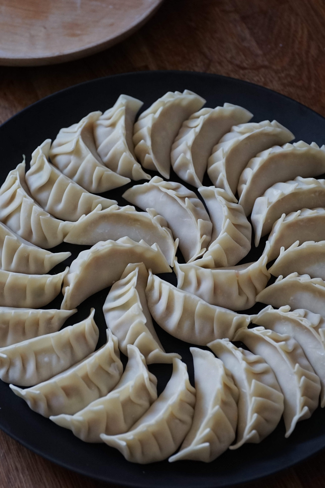
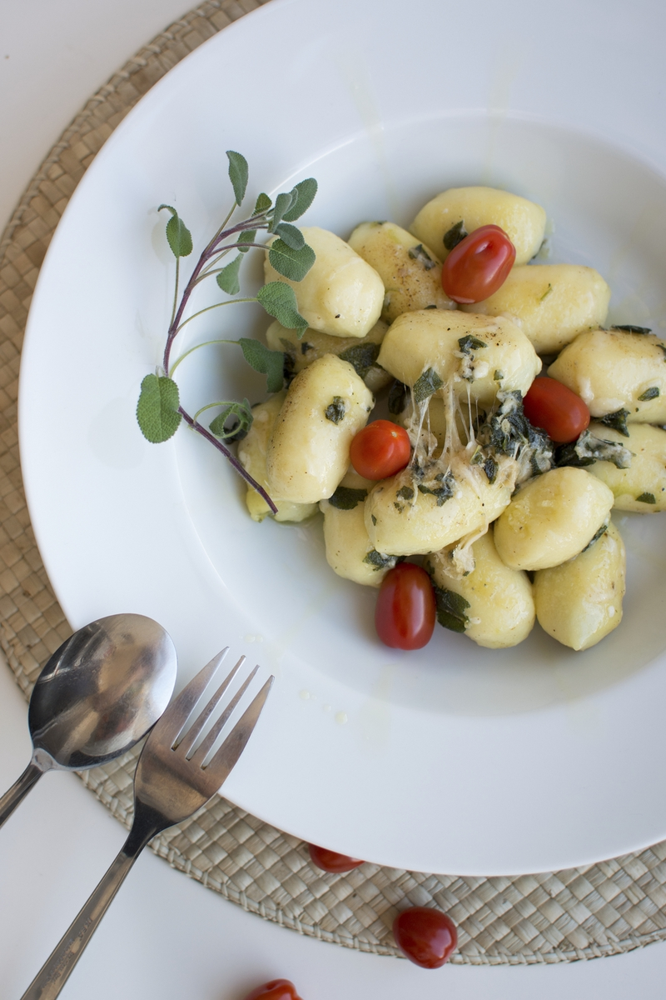
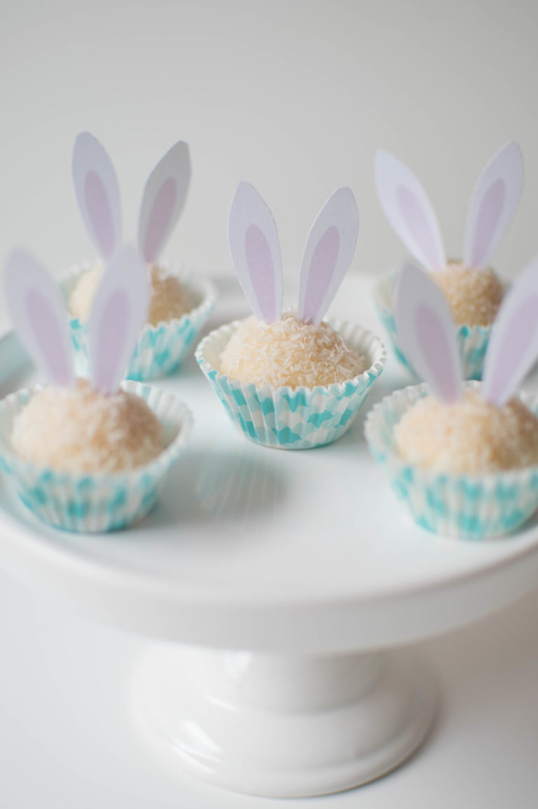

In this page you will find the recipes and some presentation suggestions.
Have a good meal!

Gyoza
Ingredients
- 125g / 1 cup plain flour
- 125g / 1 cup bread flour/li>
- 0.5 tsp salt
- 125ml / 0.5 cup boiling hot water
- 1 tbsp neutral tasting oil
- 350g pork mince
- 150g napa cabbage
- Garlic, ginger, chives, salt and pepper to season
- 4 shittake mushrooms (finely copped)
- sesame oil and dark soy sauce
How to do
- Mix all of the filling ingredients in a bowl. Do not over-mix as the meat will be tough when eating the dumpling.
- Place a teaspoon of the filling in the centre of a wrapper. Dip your finger into some water and rub this around the perimeter of the wrapper.
Fold in half and crimp the edges 4 times, starting in the middle, working your way to the edge. You will end up with a total of 8 crimps along the dumpling.
- Add some neutral oil to a frying pan on a medium-high heat. In batches, add the gyozas to the pan. Fry for a few minutes until golden and crisp on the bottom. Add some water to the pan and cover with a lid. Steam for around 3 minutes, until the filling has cooked through. Remove the lid from the pan and let any excess water evaporate. Add some sesame oil to the pan and re-crisp the bottom of the gyozas before serving.

Pesto Gnocchi
Ingredients
Pesto
- 30g parmesan and 30g pecorino (grated)
- 3 tbsps olive oil
Gnocchi
- 333g / 2 large fluffy (not waxy) potatoes
- 100g plain flour
- 1 egg
How to do
- Using pestle and mortar, crush up your basil. Once crushed, add the garlic and repeat.
- Next add the parmesan, pecorino and pine nuts. Mix and crush until the pine nuts have mostly broken down.
- Add olive oil and mix until you reach the desired consistency.
- Bake the potatoes in an oven of 200 degrees celcius for roughly an hour.
- Add the egg and then incorporate the flour. Kneed the dough until fully incorporated.
- Divide the dough up and roll out into strands until roughly 1/2 inch thick.
- Bring a pan of salted water to a boil, reduce to a simmer and add in the gnocchi. Once the gnocchi rises to the surface, cook for 2 minutes and strain.

"Brigadeiro" - Powdered milk dessert balls
Ingredients
- 1 tin of condensed milk.
- 5 spoons of powdered milk.
- 1 full spoon of unsalted butter.
- A pinch of salt.
- 1 spoon of honey.
How to do
- Mix all of the ingredients in a pan in low heat.
- Stir until the mixture tickens.
- Put in ther fridge for 3 hours and then make balls with it. Decorate with powdered milk or dry coconut.